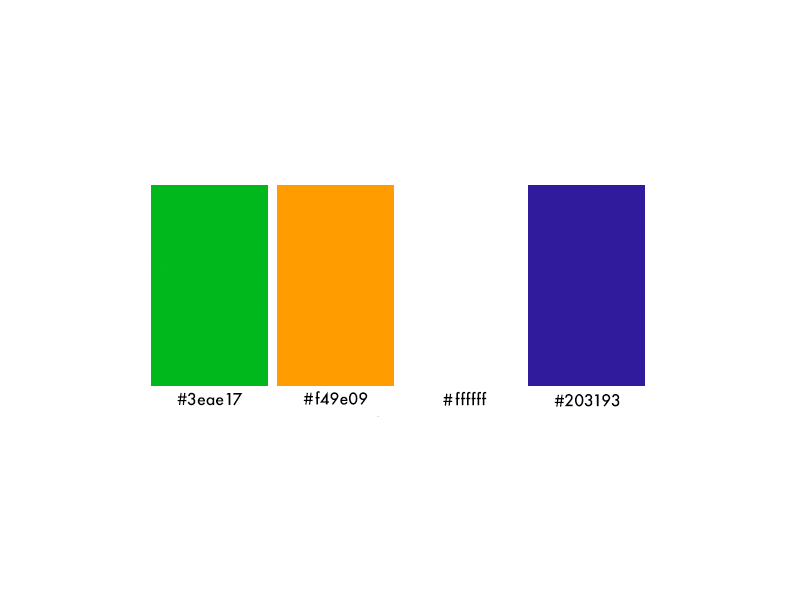

UX/UI Design, Graphic Design
Online Super Market
It was a local business for which I got the contract for making a brochure. The grocery business was new and wanted a logo as well as a brochure to promote their business. Keeping in mind the target audience, demographic, the owners need I designed a brochure for them.
Ideation & Strategy
During my initial analysis, I tried to look at similar brochures, I did realize that it isn't a new concept yet I was unsatisfied with the current market offerings. Furthermore the client being Indian wanted colors matching the Indian flag, hence those colors are implemented in the logo. The color palette could be seen as below.
{kind=link}
{kind=link}
The placement of images, text and use of white space needs to be perfect in order for the brochure to be appealing and not very overwhelming.
Hence everything has been structured in such a way that the viewer can easily understand what all, this brochure is about.
Only a handfull of text has been used below to convey the strategy of "Start Grocery Shopping".
All this helps to provide the viewer
right amount of content which would entice him in buying the products mentioned on the back page.
{kind=link}
I first sat down with the client and then got to understand the things which he wanted to showcase and what his idea behind the entire process was. After understanding what problem the client had, I came with a solution to easily represnt his strategy on the brochure. I drew quick low fidelity sketches just so that he could observe the placement of things on the page. All this was beneficial in creating the prototype.
Challenge
The main challenge was that the client had a series of design ideas that were hard to represent. Most important of them were of extra information or placement of things. This might be due to a lack of designing experience or knowledge about the field. But understanding the things which the client wants and translating it into the design is something which was a huge task.
Solution
After carefully iterating what the client wanted, this was the final design he wanted.
{kind=link}
{kind=link}
Reflections
This was a very ambitious project as I met the client outside, built relation, showcased what I could do because of which I got
the job. I was responsible for a majority chunk of the work from conceptualization to implementation.
It really highlighted for me the influence that early research has on the entire design process, and how much it can limit the scope of the project from the onset.
I was also introduced to the level of work and effort required for realizing UI interactions.
The client was very happy in the end and asked me to work on some of the further projects he had.